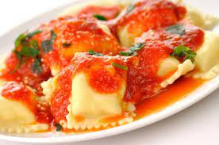

Elegi Ravioli porque me encanta la pasta y todas las variedades que tiene, y el Ravioli es de mis preferidas.
Amo el sabor que tiene cuando viene rellena de queso ricotta con salsa de blanca o roja.

Ingredientes
2
paquetes (9 oz cada uno) de ravioles rellenos de queso, refrigerados
1 paquete (8oz) de chapinones frescos rebanados (3tazas)
1 cebolla granbde, picada (1 taza)
1 frasco (24 a 28 oz) de salsa de tomate para pasta
1/2 taza de mitad de leche y mitad de crema o sustituto de crema
1/4 de taza de queso parmesano rallado
1/4 de taza de perejil fresco picado
Pasos
Cuece los ravioles y escúrrelos como indican las instrucciones del paquete. Mantenlos calientes.
Aplica spray para cocinar a la olla donde cociste los ravioles, y precalienta a fuego medio.Sofríe en
ella
los champiñones y la cebolla durante 5 minutos, revolviendo con frecuencia hasta que la cebolla se
acitrone.
Vierte en la olla la salsa para pasta y la mitad leche y mitad crema, y mezcla bien. Calienta hasta que
suelte el hervor; reduce el fuego a “bajo”. Sin dejar de revolver, agrega a la mezcla los ravioles, el
queso
y el perejil.
esta receta fue copiada de la pagina.
https://www.quericavida.com/recetas/ravioles-con-salsa-de-tomate-alfredo/18955fa1-643c-43b9-832a-821d2c8b459b